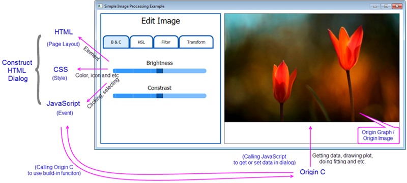

Build Dialogs using HTML and JavaScript
Intro-HTML-JS-Dialog
Origin C supports building dialog by using HTML, CSS (Cascading Style Sheets), and JavaScript. In such dialog, HTML is used to contain the elements (contents) of the dialog, and CSS is to control the presentation of HTML elements, including the elements' style, layout, etc., and then JavaScript can be used to control the elements dynamically. Also, one of the most important roles of JavaScript in such dialog is to communicate with Origin C.
The advantage of such kind of dialog is that lots of 3rd libraries are available, and it is easy to build up a good-looking dialog such as the one below:
- 
To learn more about this functionality, please refer to the detailed document pages. In addition, you can read this blog, which shows this new Origin feature by creating a simple calculator, to see the detailed steps.
Quickly get a project started with any of our examples ranging from building basic dialog to a dialog that connects to Origin elements.
Basic Examples
- Hello World
A simple example to show you how to create an HTML dialog in Origin.
- Simple Calculator
An example with triggering events by using the HTML controls.
- Dialog with A Graph
An example for building a basic dialog with a graph.
Other Examples
- Date Picker
An example of adding third-party custom components.
- Google Map
An example for calling external JavaScript API, like Google Maps JavaScript API.
- Image Processing
An example for building a dialog with an image.
- Localization
An example for handling the HTML page localization.
- Modeless Dialog with Data Selection - Basic Stats
An example for building a modeless dialog.
- Modeless Dialog-Origin Events
An example of triggering Origin Events with Origin C and Calling Javascript in Origin C.
- My Apps
An example of connecting to Origin Apps with HMTL dialog.
- OC Tree to JSON
An example for converting Origin C Tree to JSON.
- Update App Attribute
An example of connecting to Origin Apps, then getting and updating attributes of Apps with HMTL dialog.
|